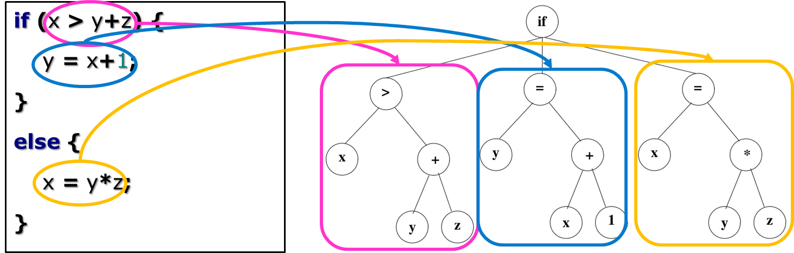

Frank Coelho de Alcantara -2020
A variável já foi declarada?
O tipos são consistentes nesta declaração?
O parâmetros chamados estão corretos?
Um ponteiro pode estar fora do espaço de memória?
As respostas dependem dos valores não da sintaxe;
Tanto perguntas quanto respostas não são locais;
Respostas podem precisar de computação.
Para cada expressão: identificar quais são os tipos;
Para cada declaração: que informação precisamos para que este artefato possa ser usado em outros lugares.
Para cada artefato de linguagem: precisamos saber quais são as regras semânticas que precisamos e vamos verificar;
Uma gramática de atributos conecta a sintaxe com a semântica;
Cada regra de produção possui uma regra semântica com ações para modificar os valores de símbolos não terminais.
Um símbolo não terminal pode ter qualquer numero de atributos e não há limites para estes atributos.
Na forma:
As regras semânticas são usadas pelo compilador para permitir a análise estática ou para produzir a árvore sintática abstrata ainda durante o parse. A isso chamamos TRADUÇÃO SINTÁTICA DIRETA
| Regras de Produção | Regras Semânticas |
|---|---|
|
|
Em uma gramática S-attributed todos os atributos são sintetizados;
Uma gramática é dita L-attributed se a árvore de parse for percorrida sempre da esquerda para direita em deep-first:
A gramática S-attributed é um caso especial das gramáticas L-attributed .
O compilador, ou interpretador, gera código para aprimorar a análise sintática durante a execução do código.
Cada vez mais comum em sistemas mistos.
Verificaçã do fluxo de controle:
Um artefato de código precisa ser definido exatamente uma vez:
Algumas vezes, precisamos repetir os identificadores:
Compatibilidade entre operador e operando:
A verificação de tipos é o coração da análise semântica.
Segurança para execução.
Detecção de erros em tempo de compilação.
Metáforas mas expressivas: overload, por exemplo.
Fornecer informações para o otimizador de código.
Estáticos: sua definição é realizada em tempo de codificação e a verificação em tempo de compilação;
Dinâmicos: sua definição pode, ou não, ser realizada em tempo de codificação mas, sua verificação é realizada em tempo de execução.
Primitivos: não possuem estrutura interna. Ex.: inteiro, real, booleano, carácter, string, intervalo e enumeração.
Compostos: possuem uma estrutura interna composta por tipos básicos e outros tipos compostos. Ex.: ponteiros, estruturas, registros, vetores e matrizes.
Construídos: são tipos, geralmente compostos, definidos pelo programador. Ex.: typedef.
| Informação | Forma | Uso |
|---|---|---|
| Tabelas de Símbolos | Declarações | Expressões e declarações |
| Informação de tipo | Expressões e declarações | Operações |
| Constantes e variáveis | Expressões e declarações | Expressões e declarações |
| Registradores e Memórias | Compilador/interpretador | Geração de código |
| Valores literais | Constantes e variáveis | Expressões e declarações |
Vamos determinar os atributos para uma linguagem aritmética simples com as regras de produção e atributos explicitados a seguir.
Vamos determinar os atributos para uma linguagem aritmética simples com as regras de produção e atributos explicitados a seguir.
Gramáticas de atributo são excelentes para estruturação da verificação semântica.
Estas regras podem ser estendidas para atender operações e declarações mais complexas.
Acrescente mais campos aos nós da AST para incluir mais atributos.
Isto é só um exemplo.
Manter a informação necessária (criar, acessar e atualizar): tabelas de símbolos.
Integrar a análise semântica no parser: AST - Abstract Sintatic Tree.
Computação das expressões semânticas: análise de tipos..
Fazer com que todo o processo seja rápido, muito rápido..
Mapeia identificadores para:$\text{𝑡𝑦𝑝𝑒, 𝑐𝑎𝑡, 𝑙𝑜𝑐𝑎𝑙𝑖𝑧𝑎çã𝑜, 𝑜𝑢𝑡𝑟𝑎𝑠 𝑝𝑟𝑜𝑝𝑖𝑒𝑑𝑎𝑑𝑒𝑠}$
Mantém as operações necessárias para abertura e fechamento de escopos e localização de itens.
Queremos as complexidade $O(1)$ para encontrar qualquer atributo.
Usamos informações adicionais para manter o fluxo de código: operações de entrada e saída de escopo, por exemplo.
Em compiladores de múltiplos passos, a tabela de símbolos deve persistir durante todos os ciclos.
Linked Lists ou Hash Tables
Para cada novo escopo: push uma tabela de símbolos novas no item (stack).
Crie a tabela de símbolos como a uma pilha feita com linked lists de tabelas de símbolos.
Os identificadores mais novos ficam no topo da pilha.
Busca: procure na pilha de tabelas de símbolos de cima para baixo.
Árvores sintáticas são representações internas do compilador, criadas pelo parser e usadas para geração de código.
Cada pai representa uma operação, cada filho representa um operando.
Cada campo usa o mesmo espaço de memória então o tamanho da union é o tamanho do maior campo definido.
Só Podemos usar um campo de cada vez. Se atribuirmos valores, ainda que corretos, para cada um dos campos em sequencia, apenas a última atribuição terá sentido.
Uma herança dos tempos que a memória era muito cara e reduzida.
Nestes tempos a uninion era uma forma bem razoável de manter uma metáfora consistente nos seus programas.
As structs são representadas como um bloco de memória, grande o suficiente para armazenar todos os campos.
O campos são ordenados de acordo com a a ordem de declaração.
O compilador irá determiner o tamanho total e a posição dos campos em memória. Durante a execução o programa não entende a estrutura da struct.
Ou seja, a struct, como a definimos só existe em forma de artefato de Código e metáfora.
Uma declaração é bem formatada se:
Sua variável alvo está bem formatada;
Sua expressão fonte está bem formatada, e os tipos declarados da fonte e do alvo coincidem;
Uma condicional é bem formatada se sua expressão de teste for do tipo bool e tanto a opção then quanto a opção else estão bem formatadas.
O Python (CPython) é definido desta forma.
Você pode baixar o material de apoio clicando aqui
AHO, A. V. et al.
Compiladores: princípios, técnicas e ferramentas.
2º. ed. Boston, MA, USA: Pearson Education Inc. , 2007.
CASS, S. The 2016 Top Programming Languages. IEEE
Spectrum, 2016. Disponível em: